Programme framing
Translated the 25th-anniversary charity brief into an exhibition concept connecting the foundation's mission, the art-support programme and public participation.
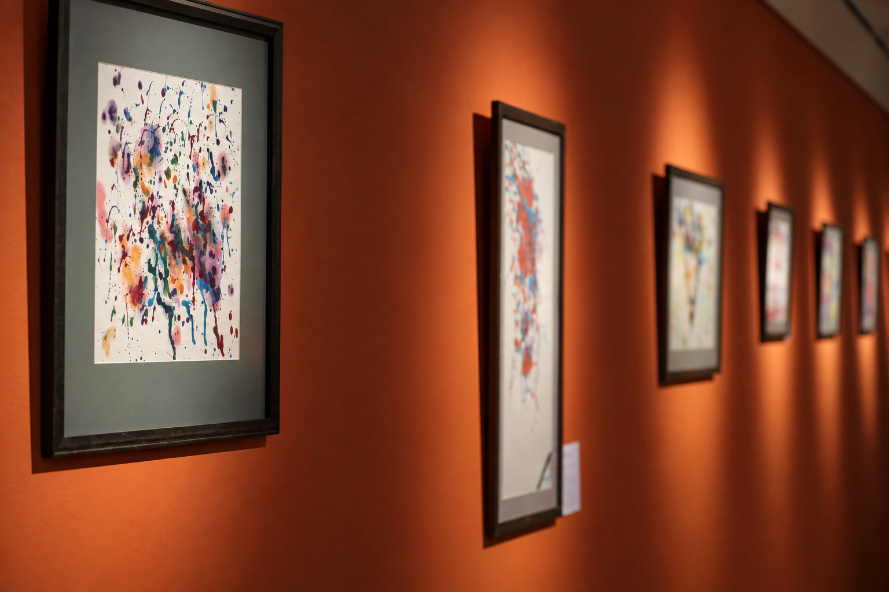
The exhibition marked Chi Heng Foundation's 25th anniversary and brought together more than forty works created through its art-support programme. It needed to make the foundation's public mission and the participants' individual expressions legible within one shared setting.
The project translated that brief into a coherent exhibition identity across the key visual, invitations, printed matter, workshop communications and display graphics. The result was an accessible visual language for moving from institutional narrative to public participation.
Translated the 25th-anniversary charity brief into an exhibition concept connecting the foundation's mission, the art-support programme and public participation.
Developed a flexible visual language across the key visual, bilingual typography, graphic motifs and a consistent information hierarchy.
Extended the identity to invitations, workshop materials and supporting printed communication so each audience touchpoint remained part of one programme.
Carried the identity into display graphics and exhibition applications, keeping the visual system coherent from the first invitation to the public setting.
Display graphics
Banner applications
Poster and spatial mockups
02 / Invitation
The exhibition invitation and workshop poster use related graphic elements to address different parts of the programme. Each format carries its own information while remaining part of one event.
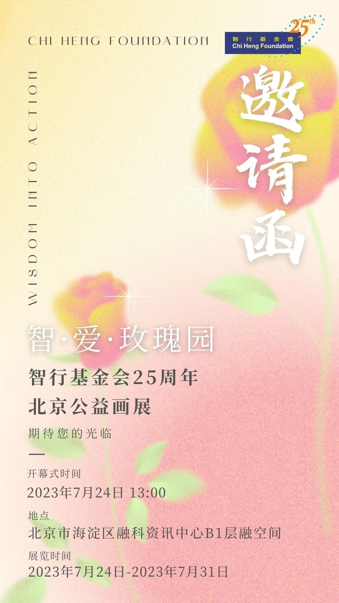
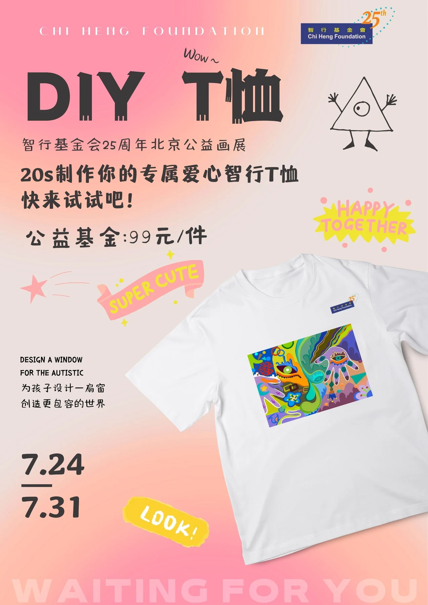
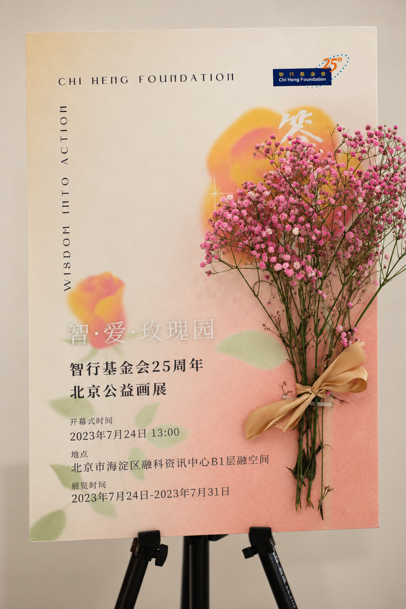
03 / Printed communication
Invitation, flyer, banner and display mockups show how the identity translates across the exhibition's public touchpoints. The views document designed applications rather than print-production evidence.
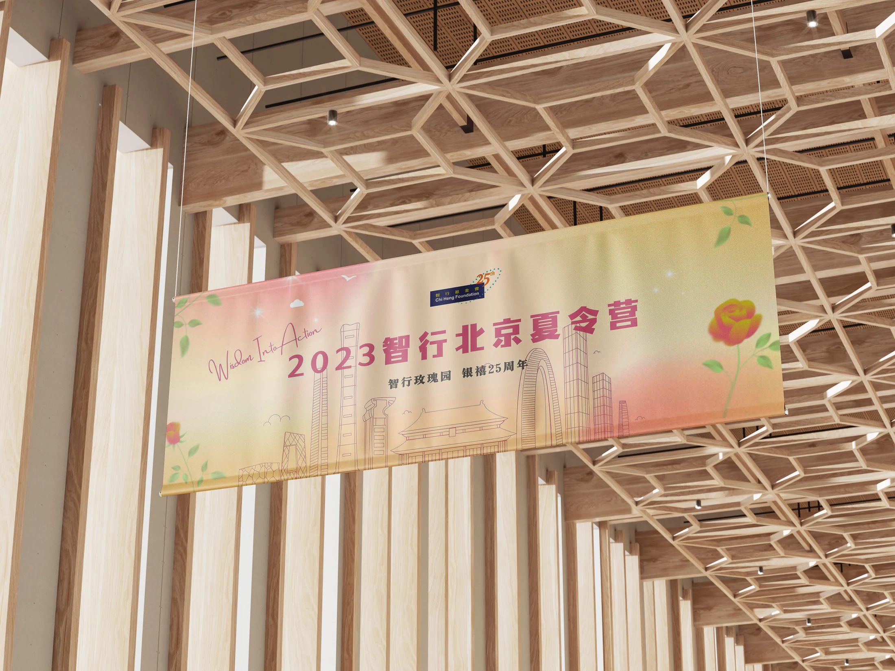
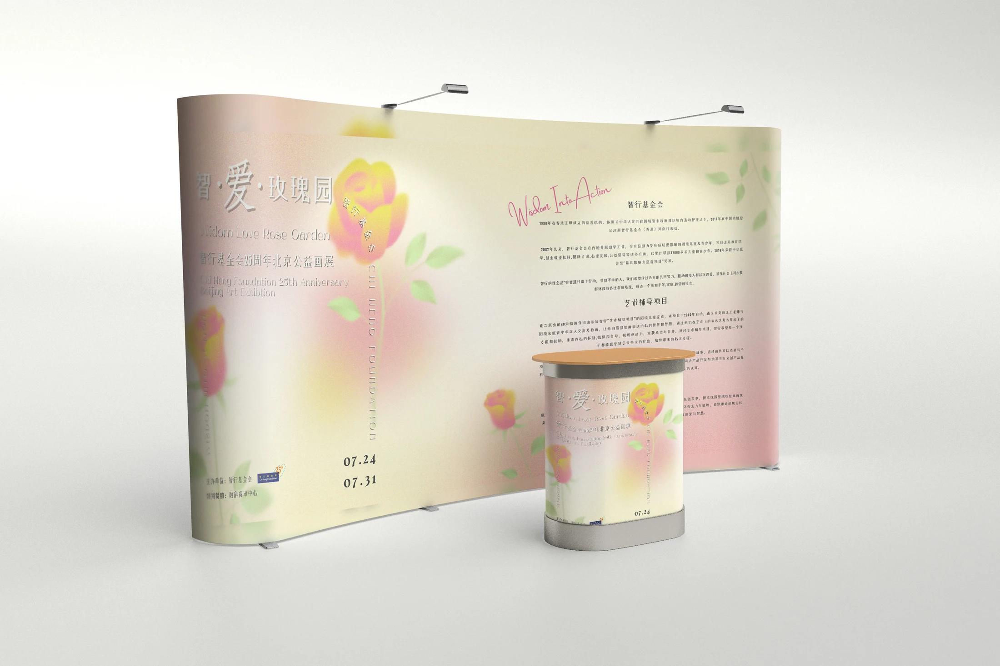
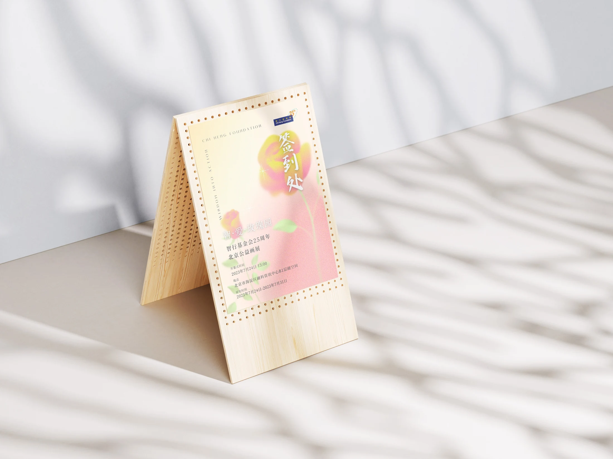
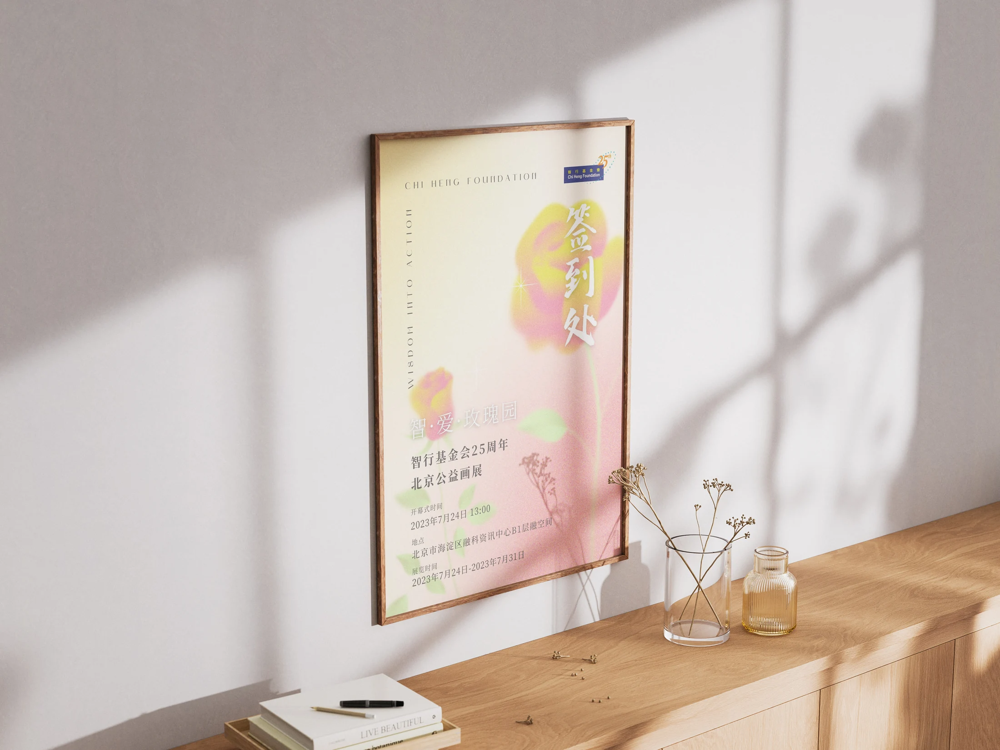
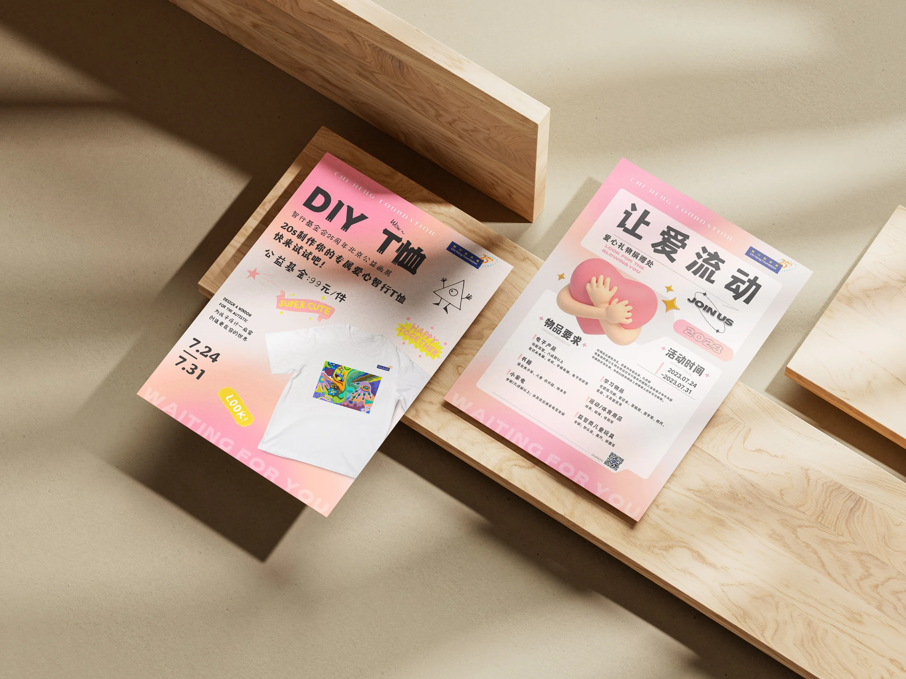
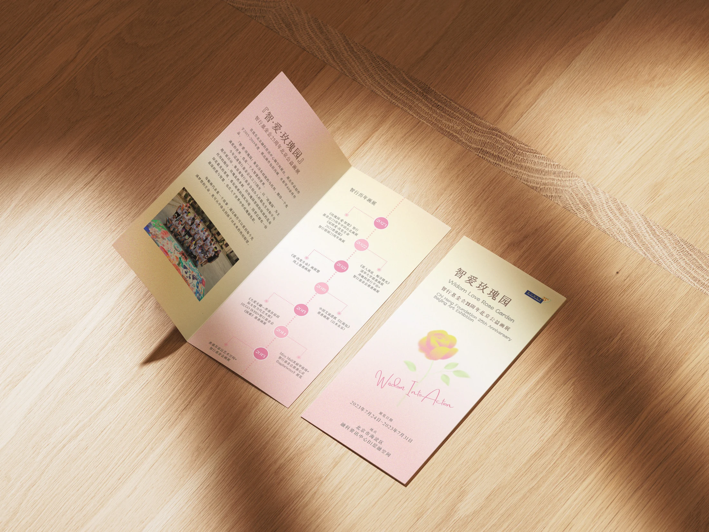
04 / Exhibition presence
The visual system was carried into the completed exhibition through framed artworks, donation communication and display details. Documented installation photographs make the move from design proposal to public setting visible.
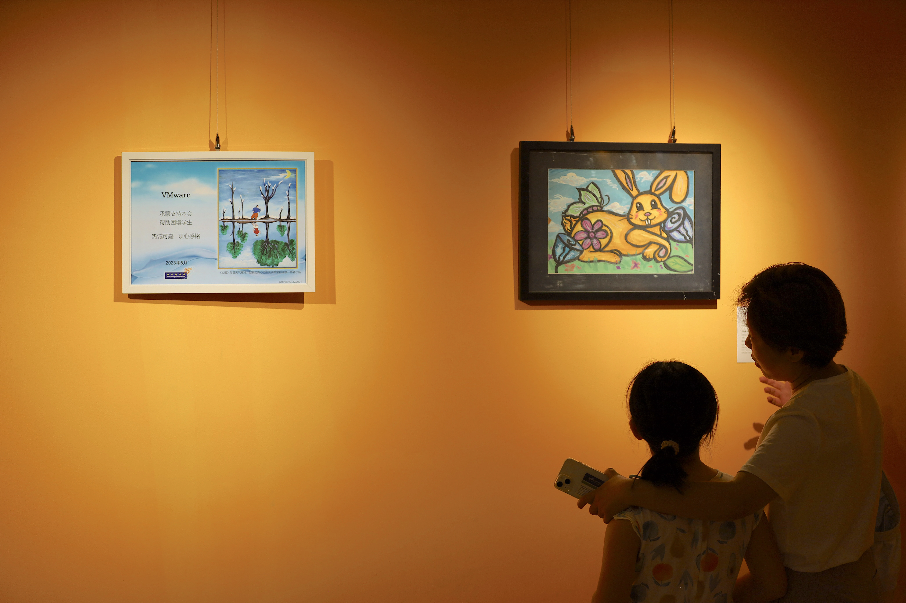
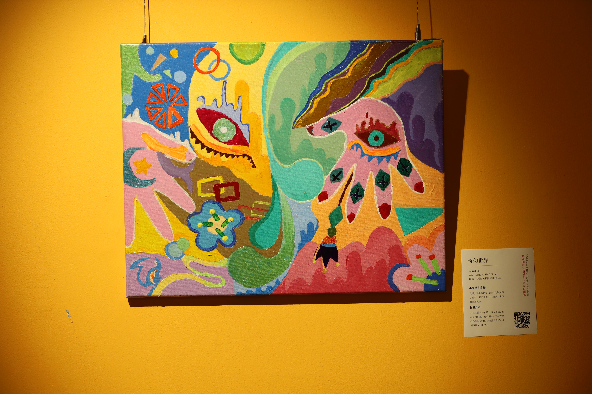
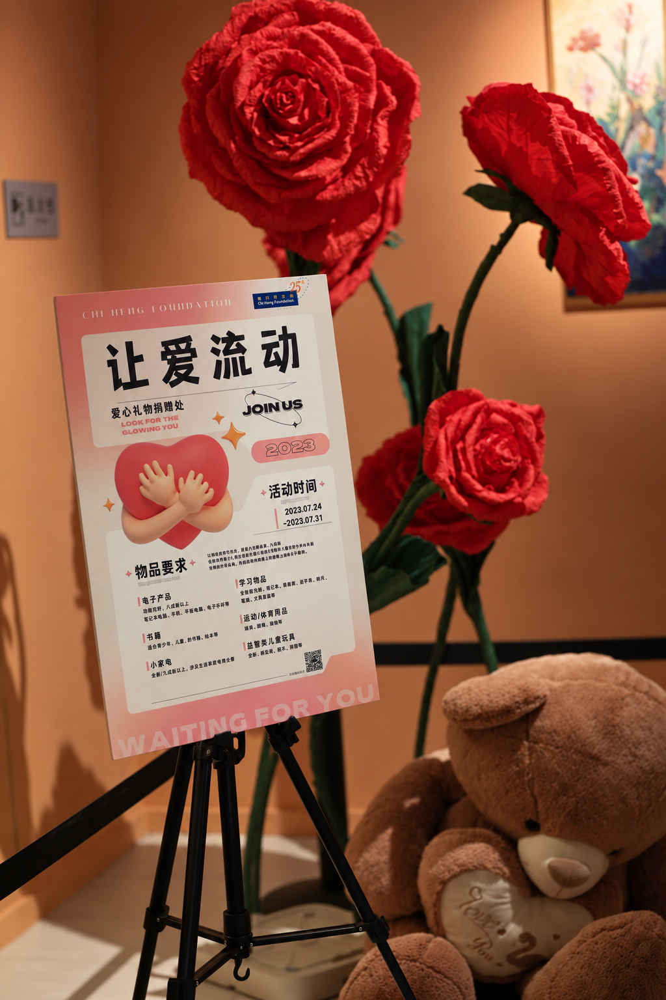